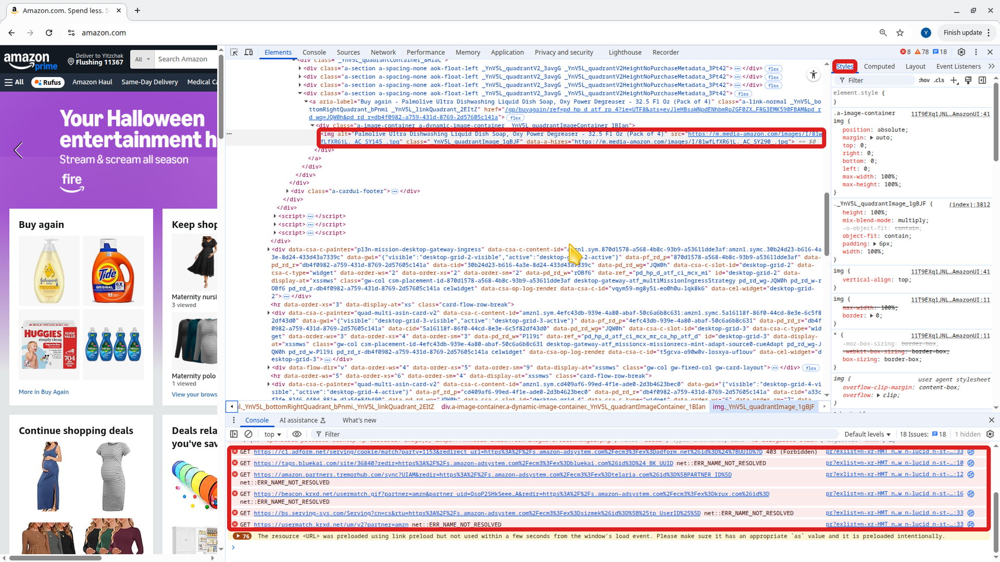

32 32. HTML, CSS, JavaScript, and Browser Developer Tools
When a web server answers, it sends the browser code written in three languages: HTML, CSS and JavaScript. This page shows what each one does with a tiny three-file website, then shows you how to look inside any web page with the browser’s built-in developer tools - a skill you will use constantly when an AI writes code for you.
32.1 Three languages, three jobs
- HTML (HyperText Markup Language) holds the content and structure: headings, paragraphs, lists, links, images, buttons, forms. It is written with tags such as
<h1>and</h1>. An opening tag, its content and the closing tag together form an element:<h1>Hello</h1>. - CSS (Cascading Style Sheets) controls the appearance: colors, fonts, spacing, layout, and how the page adapts to a phone screen.
- JavaScript (JS) adds behavior: reacting to clicks, changing the page without reloading it, and talking to servers in the background. (Despite the name, it has nothing to do with Java.)
Think of a house: HTML is the walls and rooms, CSS is the paint and furniture, and JavaScript is the wiring that makes things respond when you flip a switch. The lines blur in practice - JavaScript can change the HTML and CSS on the fly - but this is the right mental model. Whatever tools a developer uses (including the frameworks on Web Frameworks and Meta-Frameworks), in the end the browser receives HTML, CSS and JavaScript (plus media files such as images and fonts).
32.2 A tiny website in three files
hello-site/
├── index.html <- the page (HTML)
├── style.css <- how it looks (CSS)
└── app.js <- what it does (JavaScript)index.html
<!doctype html>
<html lang="en">
<head>
<meta charset="utf-8">
<title>Hello Site</title>
<link rel="stylesheet" href="style.css">
</head>
<body>
<h1>Hello, web!</h1>
<p id="message">This is my first page.</p>
<button id="like-button">Like</button>
<script src="app.js"></script>
</body>
</html>style.css
body {
font-family: Arial, sans-serif;
margin: 2rem;
}
h1 {
color: darkblue;
}
button {
font-size: 1.2rem;
padding: 0.5rem 1rem;
}app.js
console.log("app.js loaded");
const button = document.querySelector("#like-button");
const message = document.querySelector("#message");
let likes = 0;
button.addEventListener("click", () => {
likes = likes + 1;
message.textContent = "Likes: " + likes;
console.log("Button clicked. likes =", likes);
});How the pieces connect:
- The
<head>holds information about the page: its title (shown in the browser tab) and a<link>that loadsstyle.css. - The
<body>holds what you see.id="message"andid="like-button"give two elements names that CSS and JavaScript can refer to (#messagemeans “the element whose id ismessage”). <script src="app.js">loads the JavaScript. It sits at the end of the body so that the button and paragraph already exist when the script runs.- In
app.js,document.querySelectorfinds an element on the page,addEventListener("click", ...)says what to do when the button is clicked, andconsole.logprints a message to the developer tools’ Console (not on the page).
To try it, create a folder named hello-site with these three files. Use a text editor such as VS Code or nano, not a word processor (see Writing to Files) - or ask Claude Code to create them for you. Then open the page from inside the folder:
open index.htmlstart index.html(Double-clicking the file works too.) The address bar shows a URL starting with file:///: the browser is reading the file straight from your disk, with no web server involved. That is fine for a simple page like this; real apps run on a server, such as a development server on localhost (see Browsers, Web Servers, and HTTP).
32.3 View Source vs. Inspect
Every browser lets you look at the code behind a page, in two different ways:
- View Source (right-click an empty spot → “View page source”) shows the HTML file exactly as the server sent it, as read-only text.
- Inspect (right-click any element → “Inspect”) opens the developer tools (DevTools) at that element and shows the live page - including every change JavaScript has made since the page loaded.
The difference matters. Click “Like” three times on your hello-site: Inspect shows <p id="message">Likes: 3</p>, but View Source still shows “This is my first page.” On many modern sites, View Source shows almost nothing - an empty <div> and some <script> tags - because JavaScript builds the whole page in the browser.

<img> tag, the Styles pane on the right shows its CSS, and the Console at the bottom lists errors in red - even big sites have them.32.4 Opening the developer tools
Shortcuts for Chrome and Edge:
| To open… | Mac | Windows |
|---|---|---|
| DevTools (last panel used) | Cmd+Option+I |
F12 or Ctrl+Shift+I |
| DevTools at the Console | Cmd+Option+J |
Ctrl+Shift+J |
| DevTools at one element | right-click → Inspect | right-click → Inspect |
| View Source | Cmd+Option+U |
Ctrl+U |
Firefox and Safari have similar tools with slightly different shortcuts and panel names. In Safari, first turn on Settings → Advanced → “Show features for web developers”; then right-click → “Inspect Element” works.
32.5 The main DevTools panels
| Panel | What it shows | Use it to… |
|---|---|---|
| Elements (Firefox: Inspector) | The live HTML as a tree, plus the CSS applied to the selected element | See how a page is built; try out style changes |
| Console | Messages from the page’s JavaScript: console.log output and errors in red (with file name and line number) |
Find out why something “does nothing”; type JavaScript to test it |
| Network | Every request the page makes, with its status code, type, size and time | Spot failed requests (404, 500…) and slow ones; see what was sent and received |
| Application (Firefox, Safari: Storage) | Data the site stored in your browser, such as cookies and localStorage | Check whether you are “logged in”, clear saved data |
A few things to know:
- You can edit text and styles in the Elements panel. The changes exist only in your browser tab and disappear when you reload - you can’t break the real site.
- The Network panel records requests only while DevTools is open, so open it and then reload the page. Click any request to see its headers and response. It is most informative on pages loaded from a web server (an
http://orhttps://address): try it on any website, or serve your hello-site with the Python server from Browsers, Web Servers, and HTTP. - A cookie is a small piece of data a server asks the browser to keep and send back with every request to that site - for example, to remember that you are logged in (details in What Happens on the Server). localStorage is data the site’s JavaScript saves in your browser, such as a dark-mode setting; it stays after you close the tab.
32.6 DevTools and AI
As of Oct 6, 2026 · Official docs: Use Claude Code with Chrome, Interactive mode
When something on a page is broken, the browser usually knows why - the answer is in the Console or the Network panel. That makes DevTools your best friend when an AI writes your code:
- Copy the exact error instead of saying “it doesn’t work”. For example: “When I click Like, nothing happens. The Console says:
Uncaught TypeError: Cannot read properties of null (reading 'addEventListener') at app.js:7. Explain the cause, then fix it.” - Include the failing request from the Network panel: its URL, method and status code (for example, “
GET /api/eventsreturns 500”). - Paste a screenshot into Claude Code:
Ctrl+Von a Mac (Cmd+Vin iTerm2),Alt+Von Windows. - Let Claude look for itself: Claude Code can connect to Chrome or Edge (start it with
claude --chrome) to open your app, read console errors and click through pages. This needs the Claude in Chrome extension and a paid Claude plan (Pro, Max, Team or Enterprise), and it uses your real browser, including your logins - see Letting Claude Use a Browser.
The Network and Application panels can show cookies and Authorization headers. These work like passwords: anyone who has them can act as you on that site. Don’t paste them into chats, AI prompts, screenshots or GitHub issues.
Practice Questions
Easy
Question 1 · Matching
Match each language with its main job.
| Language | Job | |
|---|---|---|
| 1. HTML | A. Behavior: reacting to clicks, changing the page | |
| 2. CSS | B. Content and structure: headings, text, buttons | |
| 3. JavaScript | C. Appearance: colors, fonts, layout |
Question 2 · Short answer
What does this line in index.html do, and where in the file does it go?
<link rel="stylesheet" href="style.css">Question 3 · Short answer
What is the difference between View Source and Inspect?
Question 4 · Matching
Match each DevTools panel with the question it helps you answer.
| Panel | Question | |
|---|---|---|
| 1. Elements | A. Which requests failed, and with what status code? | |
| 2. Console | B. What cookies has this site stored in my browser? | |
| 3. Network | C. How is this part of the page built, and which CSS applies to it? | |
| 4. Application | D. What JavaScript error happened when I clicked the button? |
Question 5 · True or false
If you change a heading’s text in the Elements panel, every visitor to that website will see your change.
Question 6 · Fill in the blank
In Chrome, Maria (Mac) opens DevTools with ______, and Sam (Windows) can press ______ or Ctrl+Shift+I.
Medium
Question 7 · Predict the output
Maria opens her hello-site with the Console visible and clicks “Like” three times. What does the page show, and what has the Console printed?
Question 8 · Predict
After those three clicks, Maria opens View Source. Does it show Likes: 3? Where can she see Likes: 3 in the code?
Question 9 · Find the bug
Sam’s index.html contains <button id="like-btn">Like</button>, but app.js is unchanged. Clicking the button does nothing, and the Console shows:
Uncaught TypeError: Cannot read properties of null (reading 'addEventListener')Explain the error and fix it.
Question 10 · Write the code
Which file would you change to make the hello-site’s heading green, and what would the changed rule look like?
Question 11 · Scenario
A page loads but looks completely unstyled (plain black text, default font). In the Network panel, the request for style.css shows status 404. Give two likely causes.
Question 12 · Short answer
What is a cookie, and how is it different from localStorage?
Question 13 · Short answer
In the Network panel you see GET /api/events with status 500. Is the problem more likely in the page’s front-end code or on the server? Why?
Hard
Question 14 · Scenario
Sam moves <script src="app.js"></script> from the end of the <body> into the <head>. Now clicking “Like” does nothing and the Console shows the same “Cannot read properties of null” error, even though the ids match. Why?
Question 15 · Scenario
On a modern web app, View Source shows little more than <div id="root"></div> and a few <script> tags, yet the page is full of text and buttons, and the Elements panel shows all of it. Explain.
Question 16 · Long answer
Your sign-up form “doesn’t work”. Write the message you would send to Claude Code, using information you collected with DevTools. Explain why your message is better than “the form is broken, fix it”.
Question 17 · Long answer
Why is it dangerous to copy a cookie or an Authorization header from the Network panel into a chat, an AI prompt, or a GitHub issue?
Question 18 · Hands-on
Build the hello-site from this page. Then add a “Reset” button that sets the count back to 0 - by hand, or by asking Claude Code. Use DevTools to verify it: check the Console for errors, use the Elements panel to watch the paragraph change, and use View Source to confirm what the original HTML contains.